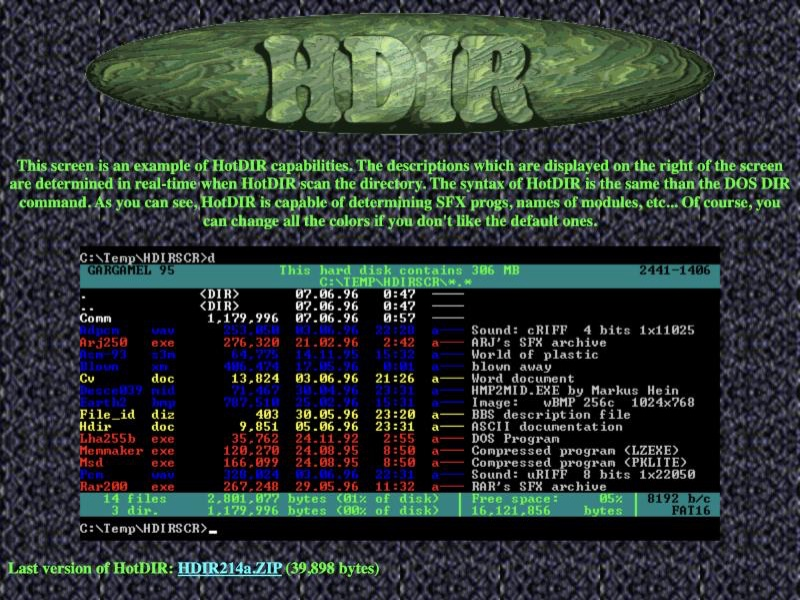
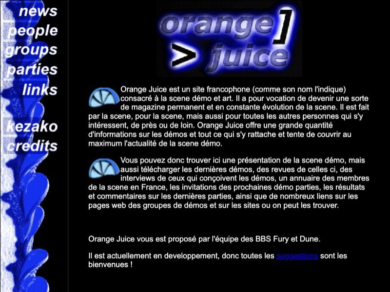
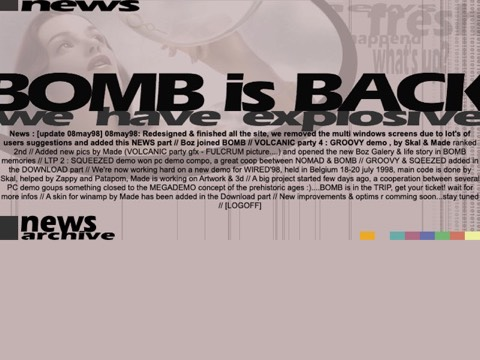
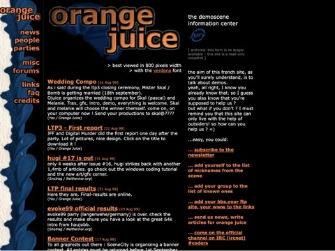
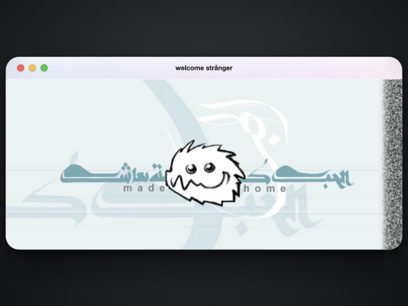

HotDIR (1997 version)
The home page of HotDIR, a DOS directory lister that recognises file types, Mac and Atari floppies and more, with release history and downloads.
Served as-is from bunny.net; no page was changed.
Old websites, kept online for history and no longer developed.
The home page of HotDIR, a DOS directory lister that recognises file types, Mac and Atari floppies and more, with release history and downloads.
Served as-is from bunny.net; no page was changed.

A French-language online magazine about the demoscene: demoparty reports and calendar, what a demo is, groups and handles, artwork and links.
Served as-is from bunny.net; no page was changed.

The official homepage of BOMB, a French demoscene group: news, member memories, incoming projects, demo downloads, pixel art, links and credits.
Modernised to run today: intro in an iframe instead of a popup, old document.layers scripts rewritten, Java applets run with CheerpJ, SSI include inlined.

The French-language demoscene magazine, one year on: news in English and French, demoparty reports and calendar, handles and groups, birthdays, demos, interviews and links.
Rebuilt from classic ASP into static HTML: forms, counters and admin pages removed, personal data redacted, font fallbacks added, POST blocked and security headers set at the edge.

A personal graphics site: digital art, a gallery of pictures in period formats with downloadable packs, news, an about page and links.
Tweaked to run today: site shown in an iframe instead of a popup, entry page split from the framed page, missing banner removed, windows-1252 charset declared.
